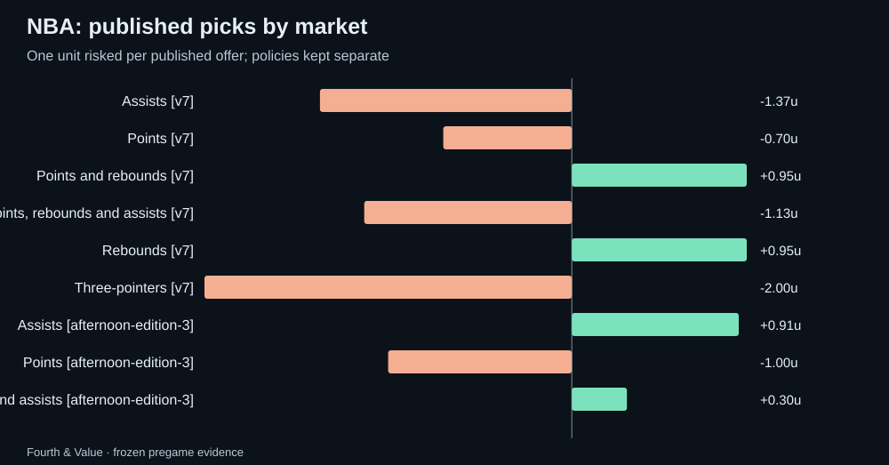

Fourth & Value · Weekly review
NBA weekly recap: 2026-11-05 to 2026-11-11
NBA saved picks and forecasts graded against official results, with market comparisons, unresolved outcomes and the next watchlist.
What this week can tell us
The full-board sample has 49 games with saved pregame quotes; 49 have official results available. Separately, 19 published picks cover 16 games; 16 of those games have official results. These are archived samples, not a claim to cover every league game.
The strongest relative probability score was steals (166 observations); the weakest was game total (47 observations). These rankings describe this sample; even the strongest market may trail sportsbook probabilities.
Published picks
Only the final morning and afternoon editions for each Eastern date are counted; afternoon picks (policy afternoon-edition-1 or later) are new picks from the 4:30 p.m. prices and never repeat a morning pick. One unit risked at each published price; pushes return the stake. Unresolved picks are excluded from ROI. Policy versions stay separate.
| Policy | Market | W–L–push | Net units | ROI | Unresolved |
|---|---|---|---|---|---|
| morning-edition-7 | Assists | 1–2–0 | -1.37 | -45.7% | 0 |
| morning-edition-7 | Points | 2–3–0 | -0.70 | -14.0% | 0 |
| morning-edition-7 | Points and rebounds | 1–0–0 | +0.95 | 95.2% | 0 |
| morning-edition-7 | Points, rebounds and assists | 1–2–0 | -1.13 | -37.7% | 0 |
| morning-edition-7 | Rebounds | 1–0–0 | +0.95 | 95.2% | 0 |
| morning-edition-7 | Three-pointers | 0–2–0 | -2.00 | -100.0% | 0 |
| afternoon-edition-3 | Assists | 1–0–0 | +0.91 | 90.9% | 0 |
| afternoon-edition-3 | Points | 0–1–0 | -1.00 | -100.0% | 0 |
| afternoon-edition-3 | Rebounds and assists | 1–1–0 | +0.30 | 15.0% | 0 |
Closing-line value report card
Each published pick’s price compared with the closing market: the median no-vig chance across US books at the pick’s exact line, captured in the final minutes before the start. Value at the close is how much more the published price paid than that closing chance justified; beat the close is the share of picks where it was positive; market move is how far the closing chance moved toward our side (positive) or away from it (negative) after the pick. Over many picks, value at the close is the earliest reliable sign of a real edge, long before win–loss results settle down. It is a measure of price, not a guarantee.
| Edition | Picks | Closing prices | Value at the close | Beat the close | Market move |
|---|---|---|---|---|---|
| Morning picks | 21 | 0 | — | — | — |
| Afternoon picks | 4 | 0 | — | — | — |
| All picks this week | 25 | 0 | — | — | — |
| All picks since 2026-11-04 | 29 | 0 | — | — | — |

Full-board market results
One most-offered paired line per game, player and market from the final saved pregame snapshot. O/U columns count over / under / push; team markets count home win or cover / away / push. These are market outcomes, not a strategy return.
| Market | Over or home / other / push | Unresolved | Brier model / market (n) | Mean error model / line (n) |
|---|---|---|---|---|
| Moneyline | 24 / 24 / 0 | 1 | 0.1756 / 0.1589 (48) | — |
| Assists | 231 / 260 / 0 | 31 | 0.2501 / 0.2449 (489) | 1.66 / 1.67 (489) |
| Blocks | 18 / 35 / 0 | 3 | 0.2402 / 0.2246 (53) | 1.11 / 1.08 (53) |
| Points | 286 / 321 / 0 | 40 | 0.2533 / 0.2484 (604) | 5.09 / 4.91 (604) |
| Points and assists | 230 / 231 / 0 | 27 | 0.2608 / 0.2489 (459) | 6.02 / 5.72 (459) |
| Points and rebounds | 257 / 319 / 0 | 38 | 0.2518 / 0.2495 (573) | 5.85 / 5.64 (573) |
| Points, rebounds and assists | 228 / 272 / 0 | 33 | 0.2616 / 0.2502 (498) | 6.68 / 6.29 (498) |
| Rebounds | 262 / 326 / 0 | 38 | 0.2505 / 0.2463 (585) | 1.93 / 1.89 (585) |
| Rebounds and assists | 206 / 253 / 0 | 28 | 0.2579 / 0.2495 (457) | 2.88 / 2.78 (457) |
| Steals | 69 / 98 / 0 | 7 | 0.2212 / 0.2259 (166) | 0.86 / 0.96 (166) |
| Three-pointers | 257 / 245 / 0 | 29 | 0.2519 / 0.2457 (499) | 1.14 / 1.15 (499) |
| Spread / run line | 27 / 21 / 0 | 1 | 0.2606 / 0.2498 (48) | — |
| Game total | 23 / 24 / 1 | 1 | 0.2702 / 0.2500 (47) | 13.34 / 12.52 (48) |
Forecast quality
Across 4526 matched non-push observations in 48 games, model Brier was 0.2525, versus market 0.2459. Lower is better. The game-block 95% interval for model minus market Brier is +0.0012 to +0.0125.
Probabilities are compared on the same non-push outcomes after conditioning the model on non-push. Missing forecasts stay missing. Error comparisons use matched observations only. Small samples and correlated markets limit what a strong week can prove.
Next week's watchlist
- Denver Nuggets @ New Orleans Pelicans: saved model 237.44, line 234.5, gap +2.94. Snapshot Nov 14, 2026 at 06:47 AM EST.
- Chicago Bulls @ Minnesota Timberwolves: saved model 233.27, line 235.5, gap -2.23. Snapshot Nov 14, 2026 at 06:47 AM EST.
- Detroit Pistons @ Miami Heat: saved model 230.36, line 228.5, gap +1.86. Snapshot Nov 14, 2026 at 06:47 AM EST.
- Dallas Mavericks @ Cleveland Cavaliers: saved model 230.73, line 231.5, gap -0.77. Snapshot Nov 14, 2026 at 06:47 AM EST.
- Brooklyn Nets @ Memphis Grizzlies: saved model 227.98, line 227.5, gap +0.48. Snapshot Nov 14, 2026 at 06:47 AM EST.
These are dated model-market disagreements to research, not validated edges. Check lineups, availability and current prices.
Evidence and limitations
participation unconfirmed: 191, evidence at or after official tipoff: 86
Official nonparticipants, unsupported contracts and missing statistics are unresolved, never automatic zeroes or winning unders. Standard full-game settlement is assumed; sportsbook exceptions require separate review. MLB pitcher props require an official starting appearance. Team totals are not part of the supported archive. Results may be revised when official feeds are corrected.
Download every graded row and source snapshot · Current NBA board · How updates work · All recaps